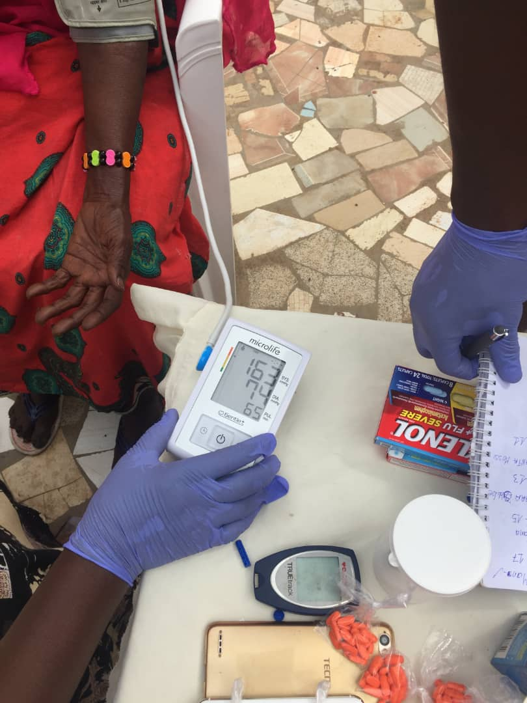

Know Your Numbers
This project consists of helping individuals, diabetes patients to input their glycemic data in an application that will output whether or not their glycemic level is in the normal range or not. The app should be able to give a descriptive graph with different colors showing the result. The green color will be assigned the normal range and red will represent the none normal one. When checking the glycemic level, there is a stage called the Pre-diabetic stage. Consequently, that stage will be represented by yellow color. The number of tests will depend on the individuals and their physicians. In general, individuals can perform three tests daily, the first one before eating anything in the morning and the second one, two hours after eating lunch, and the last one before going to bed. The target population is the general population and medical doctors or hospitals, and medical clinics. This App will allow individuals, on one hand, to create and store data that can provide them a visual reading of their data and on the other hand, the app also could help medical doctors and medical practitioners quickly access patients' results for up to three weeks of input data.
Place Holder for:
- GitHub repo of the project
- Working App
PlaceHolder
This project consists of helping individuals, diabetes patients to input their glycemic data in an application that will output whether or not their glycemic level is in the normal range or not. The app should be able to give a descriptive graph with different colors showing the result. The green color will be assigned the normal range and red will represent the none normal one. When checking the glycemic level, there is a stage called the Pre-diabetic stage. Consequently, that stage will be represented by yellow color. The number of tests will depend on the individuals and their physicians. In general, individuals can perform three tests daily,...................................
Place Holder for:
- GitHub repo of the project
- Working App